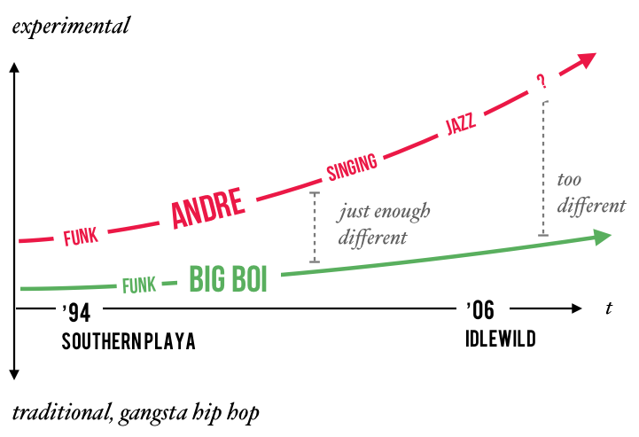

The Birth of Southern Slang
As a fan of hip-hop etymology, I looked for Outkast's role as potential inventors of slang. Turns out that there’s definitely a case for Outkast's first use of "crunk" and "skeet."
What I never realized is that this is consistent with Outkast’s position as the face of southern hip-hop – "crunk" and "skeet" both originated from the South. Southern themes in hip-hop are intimately connected to Outkast's legacy.
Here's why: before Outkast, southern hip-hop was jokingly called “country s---” by east/west-coast constituencies. People began to take the South more seriously when Outkast won the ’95 Source award for best new group. During the acceptance speech, the east/west-coast’s lack of respect for the South revealed itself in the form of boos from the audience.
Big Boi paid tribute to New York and “all the original MCs,” but Andre decided to rant, "I’m tired of the close-minded folks. We got a demo tape and no one wants to hear it. But the south got something to say—that’s all I got to say."
Outkast's Southern Sound: ATL Strip Clubs, Guitar Riffs, and Aliens
Beyond ATL slang, Outkast’s first four albums contain copious drawl and references to Atlanta (strip clubs, projects, neighborhoods, intersections, Cadillacs), creating a sound that was distinctly southern.
There are countless anecdotes that Atlanta was absolutely captivated by Outkast's early music. Their music was heard on every street-corner and from cars driving by. Intersections and businesses referenced in the songs gained popularity. There’s even evidence of Puff Daddy directing Playa’s Ball (Outkast’s first single in ’94) and bringing Kangol hats back to NYC.
Outkast's sound became even more distinct when they began producing their own music on ATLiens (their second album). These self-produced songs are about aliens, stars, and Nuwabian Nation—just about as far as you can get from the glorification of pimps, guns, and drugs (east/west-coast themes).

The Evolution of OutKast's Lyrical Themes

With each album, OutKast transitioned from gritty street narratives to explorations of love, spirituality, and imagination. Their evolution is documented across 6 albums over 12 years, chronicling their growth as individuals and artists.
Life Events to Listen for in OutKast's Discography

- Attempt to represent (and give respect to) the South
- 17-year-olds making it up as they go
- Create a new sound with P-Funk
- Tension from the boos at ’95 Source Awards
- Andre’s with Erykah Badu, adopts veganism, and explores Nuwaubian Nation
- Darker melodies from the death of Big’s aunt/mother.
- Andre and Big Boi have kids
- Tension from breakup rumors
- Andre’s experimentation with singing

- Andre-Erykah breakup (Ms. Jackson)
- Andre’s tired of hip hop – less rapping
Andre and Big Boi's Creative Approach
The duo constantly experimented with their music, pushing the boundaries of both southern rap and hip-hop. Andre’s movement away from hip hop and Big Boi’s adherence to tradition created a unique tension, reflected in their groundbreaking musical evolution.
Effect on the Trajectory of Hip-Hop and Pop Music

OutKast's contribution to hip-hop was pivotal, leading to a sub-genre (the dirty south) and solidifying the genre's mainstream acceptance. Their experimentation with diverse musical styles broke barriers and attracted a broad audience to hip-hop.